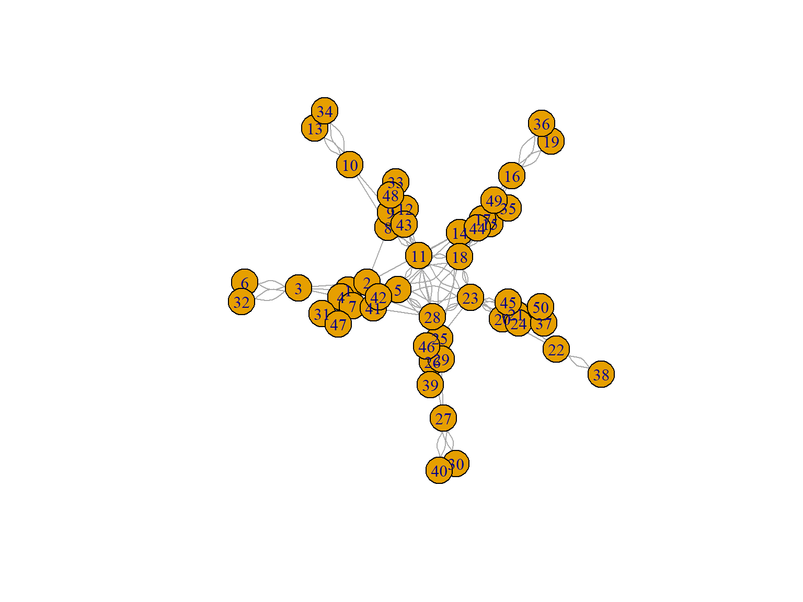
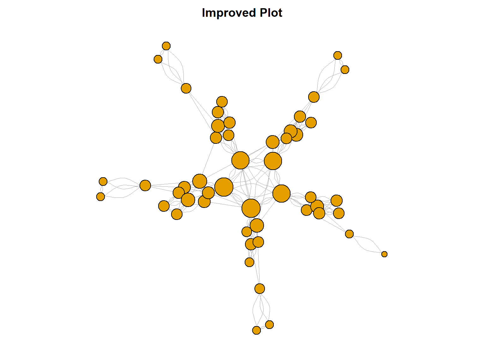

library(dplyr)
library(tibble)
employees <- read.csv("data/employees.csv")DBA3702 Assignment 1
Part 1: Data Wrangling with dplyr
Question 1.1: Data Exploration
a) Load packages and read data
b) Convert to tibble and display first 10 rows
employees <- as_tibble(employees)
print(employees, n = 10)# A tibble: 50 × 8
employee_id name department role years_exp salary performance_score
<int> <chr> <chr> <chr> <int> <int> <dbl>
1 1 Alice Chen Engineeri… Seni… 8 95000 4.5
2 2 Bob Martinez Engineeri… Lead 12 120000 4.8
3 3 Charlie Kim Engineeri… Juni… 2 65000 3.8
4 4 Diana Patel Engineeri… Seni… 7 92000 4.2
5 5 Eve Thompson Engineeri… Mana… 15 140000 4.6
6 6 Frank Liu Engineeri… Juni… 1 58000 3.2
7 7 Grace Okonkwo Engineeri… Seni… 9 98000 4.4
8 8 Henry Wang Marketing Lead 10 105000 4.3
9 9 Iris Nakamura Marketing Seni… 6 82000 3.9
10 10 Jack Brown Marketing Juni… 2 55000 3.5
# ℹ 40 more rows
# ℹ 1 more variable: projects_completed <int>c) Data summary
cat("Rows:", nrow(employees), "\n")Rows: 50 cat("Columns:", ncol(employees), "\n")Columns: 8 sapply(employees, typeof) employee_id name department role
"integer" "character" "character" "character"
years_exp salary performance_score projects_completed
"integer" "integer" "double" "integer" summary(employees) employee_id name department role
Min. : 1.00 Length:50 Length:50 Length:50
1st Qu.:13.25 Class :character Class :character Class :character
Median :25.50 Mode :character Mode :character Mode :character
Mean :25.50
3rd Qu.:37.75
Max. :50.00
years_exp salary performance_score projects_completed
Min. : 1.00 Min. : 48000 Min. :2.900 Min. : 2.00
1st Qu.: 3.00 1st Qu.: 65750 1st Qu.:3.600 1st Qu.: 6.00
Median : 6.50 Median : 85000 Median :4.000 Median :11.50
Mean : 6.68 Mean : 86420 Mean :3.970 Mean :12.24
3rd Qu.: 9.00 3rd Qu.:101500 3rd Qu.:4.375 3rd Qu.:17.00
Max. :16.00 Max. :145000 Max. :4.900 Max. :30.00 The dataset includes information about 50 employees with 8 variables. This includes basic information, such as employee name and department, as well as quantitative information, such as salary, years of experience, performance scores, and number of projects completed.
Question 1.2: Selecting and Filtering
d) Select specific columns
employees %>%
select(name, department, role, performance_score)# A tibble: 50 × 4
name department role performance_score
<chr> <chr> <chr> <dbl>
1 Alice Chen Engineering Senior 4.5
2 Bob Martinez Engineering Lead 4.8
3 Charlie Kim Engineering Junior 3.8
4 Diana Patel Engineering Senior 4.2
5 Eve Thompson Engineering Manager 4.6
6 Frank Liu Engineering Junior 3.2
7 Grace Okonkwo Engineering Senior 4.4
8 Henry Wang Marketing Lead 4.3
9 Iris Nakamura Marketing Senior 3.9
10 Jack Brown Marketing Junior 3.5
# ℹ 40 more rowse) Select employees with performance > 4.0
high_performers <- employees %>%
filter(performance_score > 4.0)
high_performers# A tibble: 23 × 8
employee_id name department role years_exp salary performance_score
<int> <chr> <chr> <chr> <int> <int> <dbl>
1 1 Alice Chen Engineeri… Seni… 8 95000 4.5
2 2 Bob Martinez Engineeri… Lead 12 120000 4.8
3 4 Diana Patel Engineeri… Seni… 7 92000 4.2
4 5 Eve Thompson Engineeri… Mana… 15 140000 4.6
5 7 Grace Okonkwo Engineeri… Seni… 9 98000 4.4
6 8 Henry Wang Marketing Lead 10 105000 4.3
7 11 Kate Wilson Marketing Mana… 14 125000 4.5
8 14 Nathan Lee Sales Lead 11 115000 4.7
9 15 Olivia Davis Sales Seni… 8 88000 4.1
10 18 Rachel Green Sales Mana… 13 130000 4.4
# ℹ 13 more rows
# ℹ 1 more variable: projects_completed <int>f) Select employees in Engineering/Marketing with > 5 years experience
employees %>%
filter((department == "Engineering" | department == "Marketing") & years_exp > 5)# A tibble: 14 × 8
employee_id name department role years_exp salary performance_score
<int> <chr> <chr> <chr> <int> <int> <dbl>
1 1 Alice Chen Engineeri… Seni… 8 95000 4.5
2 2 Bob Martinez Engineeri… Lead 12 120000 4.8
3 4 Diana Patel Engineeri… Seni… 7 92000 4.2
4 5 Eve Thompson Engineeri… Mana… 15 140000 4.6
5 7 Grace Okonkwo Engineeri… Seni… 9 98000 4.4
6 8 Henry Wang Marketing Lead 10 105000 4.3
7 9 Iris Nakamura Marketing Seni… 6 82000 3.9
8 11 Kate Wilson Marketing Mana… 14 125000 4.5
9 31 Eric Zhang Engineeri… Seni… 6 88000 4
10 33 George Park Marketing Seni… 7 80000 3.7
11 41 Oscar Rivera Engineeri… Lead 11 118000 4.5
12 42 Paula Hughes Engineeri… Mana… 16 145000 4.9
13 43 Quentin Price Marketing Lead 8 100000 4.1
14 47 Ulrich Weber Engineeri… Seni… 7 94000 4.2
# ℹ 1 more variable: projects_completed <int>g) Select columns using helpers
employees %>%
select(contains("score") | starts_with("p"))# A tibble: 50 × 2
performance_score projects_completed
<dbl> <int>
1 4.5 15
2 4.8 22
3 3.8 5
4 4.2 12
5 4.6 28
6 3.2 3
7 4.4 16
8 4.3 18
9 3.9 11
10 3.5 4
# ℹ 40 more rowsThere are two columns, performance_score and projects_completed, that meet the given condition.
Question 1.3: Sorting and Ranking
h) Identify top 5 highest-paid employees
employees %>%
arrange(desc(salary)) %>%
head(5)# A tibble: 5 × 8
employee_id name department role years_exp salary performance_score
<int> <chr> <chr> <chr> <int> <int> <dbl>
1 42 Paula Hughes Engineering Manag… 16 145000 4.9
2 5 Eve Thompson Engineering Manag… 15 140000 4.6
3 28 Bella Moore Finance Manag… 14 135000 4.7
4 18 Rachel Green Sales Manag… 13 130000 4.4
5 11 Kate Wilson Marketing Manag… 14 125000 4.5
# ℹ 1 more variable: projects_completed <int>i) Sort by department, then performance
employees %>%
arrange(department, desc(performance_score))# A tibble: 50 × 8
employee_id name department role years_exp salary performance_score
<int> <chr> <chr> <chr> <int> <int> <dbl>
1 42 Paula Hughes Engineeri… Mana… 16 145000 4.9
2 2 Bob Martinez Engineeri… Lead 12 120000 4.8
3 5 Eve Thompson Engineeri… Mana… 15 140000 4.6
4 1 Alice Chen Engineeri… Seni… 8 95000 4.5
5 41 Oscar Rivera Engineeri… Lead 11 118000 4.5
6 7 Grace Okonkwo Engineeri… Seni… 9 98000 4.4
7 4 Diana Patel Engineeri… Seni… 7 92000 4.2
8 47 Ulrich Weber Engineeri… Seni… 7 94000 4.2
9 31 Eric Zhang Engineeri… Seni… 6 88000 4
10 32 Fiona O'Brien Engineeri… Juni… 3 68000 3.9
# ℹ 40 more rows
# ℹ 1 more variable: projects_completed <int>j) Identify employee with lowest salary in each department
employees %>%
arrange(department, salary) %>%
group_by(department) %>%
slice_head(n = 1) %>%
ungroup()# A tibble: 5 × 8
employee_id name department role years_exp salary performance_score
<int> <chr> <chr> <chr> <int> <int> <dbl>
1 6 Frank Liu Engineeri… Juni… 1 58000 3.2
2 30 Dana Hill Finance Juni… 1 55000 3
3 22 Victor Nguyen HR Juni… 1 48000 3.1
4 13 Maya Rodriguez Marketing Juni… 1 52000 3.3
5 36 Julia Foster Sales Juni… 1 53000 2.9
# ℹ 1 more variable: projects_completed <int>Question 1.4: Creating New Variables
k) Salary per year of experience
employees %>%
mutate(salary_per_year_exp = salary / years_exp) %>%
select(name, salary, years_exp, salary_per_year_exp)# A tibble: 50 × 4
name salary years_exp salary_per_year_exp
<chr> <int> <int> <dbl>
1 Alice Chen 95000 8 11875
2 Bob Martinez 120000 12 10000
3 Charlie Kim 65000 2 32500
4 Diana Patel 92000 7 13143.
5 Eve Thompson 140000 15 9333.
6 Frank Liu 58000 1 58000
7 Grace Okonkwo 98000 9 10889.
8 Henry Wang 105000 10 10500
9 Iris Nakamura 82000 6 13667.
10 Jack Brown 55000 2 27500
# ℹ 40 more rowsl) Performance category
employees_cat <- employees %>%
mutate(performance_category = case_when(
performance_score >= 4.5 ~ "Outstanding",
performance_score >= 3.5 ~ "Exceeds Expectations",
performance_score >= 2.5 ~ "Meets Expectations",
TRUE ~ "Needs Improvement"
))
employees_cat %>%
select(name, performance_score, performance_category)# A tibble: 50 × 3
name performance_score performance_category
<chr> <dbl> <chr>
1 Alice Chen 4.5 Outstanding
2 Bob Martinez 4.8 Outstanding
3 Charlie Kim 3.8 Exceeds Expectations
4 Diana Patel 4.2 Exceeds Expectations
5 Eve Thompson 4.6 Outstanding
6 Frank Liu 3.2 Meets Expectations
7 Grace Okonkwo 4.4 Exceeds Expectations
8 Henry Wang 4.3 Exceeds Expectations
9 Iris Nakamura 3.9 Exceeds Expectations
10 Jack Brown 3.5 Exceeds Expectations
# ℹ 40 more rowsm) Experience level
employees_exp <- employees %>%
mutate(experience_level = case_when(
years_exp <= 3 ~ "Entry",
years_exp <= 7 ~ "Mid",
years_exp <= 12 ~ "Senior",
TRUE ~ "Expert"
))
employees_exp %>%
select(name, years_exp, experience_level)# A tibble: 50 × 3
name years_exp experience_level
<chr> <int> <chr>
1 Alice Chen 8 Senior
2 Bob Martinez 12 Senior
3 Charlie Kim 2 Entry
4 Diana Patel 7 Mid
5 Eve Thompson 15 Expert
6 Frank Liu 1 Entry
7 Grace Okonkwo 9 Senior
8 Henry Wang 10 Senior
9 Iris Nakamura 6 Mid
10 Jack Brown 2 Entry
# ℹ 40 more rowsn) High performer flag
employees %>%
mutate(is_high_performer = performance_score > 4.0 & projects_completed >= 10) %>%
filter(is_high_performer) %>%
select(name, department, performance_score, projects_completed)# A tibble: 23 × 4
name department performance_score projects_completed
<chr> <chr> <dbl> <int>
1 Alice Chen Engineering 4.5 15
2 Bob Martinez Engineering 4.8 22
3 Diana Patel Engineering 4.2 12
4 Eve Thompson Engineering 4.6 28
5 Grace Okonkwo Engineering 4.4 16
6 Henry Wang Marketing 4.3 18
7 Kate Wilson Marketing 4.5 24
8 Nathan Lee Sales 4.7 21
9 Olivia Davis Sales 4.1 14
10 Rachel Green Sales 4.4 25
# ℹ 13 more rowsQuestion 1.5: Aggregation and Grouping
o) Company-wide summary
employees %>%
summarise(
total_employees = n(),
avg_salary = mean(salary),
avg_performance = mean(performance_score),
total_projects = sum(projects_completed)
)# A tibble: 1 × 4
total_employees avg_salary avg_performance total_projects
<int> <dbl> <dbl> <int>
1 50 86420 3.97 612p) Summary by department
employees %>%
group_by(department) %>%
summarise(
count = n(),
avg_salary = mean(salary),
avg_perf = mean(performance_score),
min_exp = min(years_exp),
max_exp = max(years_exp)
)# A tibble: 5 × 6
department count avg_salary avg_perf min_exp max_exp
<chr> <int> <dbl> <dbl> <int> <int>
1 Engineering 12 98417. 4.25 1 16
2 Finance 9 86333. 3.96 1 14
3 HR 9 75556. 3.76 1 12
4 Marketing 10 80700 3.86 1 14
5 Sales 10 87600 3.95 1 13q) Summary by department and role
dept_role <- employees %>%
group_by(department, role) %>%
summarise(avg_salary = mean(salary), count = n(), .groups = "drop") %>%
arrange(desc(avg_salary))
dept_role# A tibble: 20 × 4
department role avg_salary count
<chr> <chr> <dbl> <int>
1 Engineering Manager 142500 2
2 Finance Manager 135000 1
3 Sales Manager 130000 1
4 Marketing Manager 125000 1
5 Engineering Lead 119000 2
6 Sales Lead 113500 2
7 HR Manager 110000 1
8 Finance Lead 105000 2
9 Marketing Lead 102500 2
10 HR Lead 93500 2
11 Engineering Senior 93400 5
12 Sales Senior 87250 4
13 Finance Senior 85667. 3
14 Marketing Senior 79000 4
15 HR Senior 71250 4
16 Engineering Junior 63667. 3
17 Finance Junior 58333. 3
18 Sales Junior 56667. 3
19 Marketing Junior 53667. 3
20 HR Junior 49000 2# Highest combo:
dept_role %>% head(1)# A tibble: 1 × 4
department role avg_salary count
<chr> <chr> <dbl> <int>
1 Engineering Manager 142500 2Managers in the Engineering department have the highest salary on average.
r) Individual employees’ salary as % of department average
employees %>%
group_by(department) %>%
mutate(
dept_avg = mean(salary),
pct_of_avg = salary / dept_avg * 100
) %>%
ungroup() %>%
arrange(desc(pct_of_avg)) %>%
select(name, department, salary, dept_avg, pct_of_avg)# A tibble: 50 × 5
name department salary dept_avg pct_of_avg
<chr> <chr> <int> <dbl> <dbl>
1 Bella Moore Finance 135000 86333. 156.
2 Kate Wilson Marketing 125000 80700 155.
3 Rachel Green Sales 130000 87600 148.
4 Paula Hughes Engineering 145000 98417. 147.
5 Wendy Clark HR 110000 75556. 146.
6 Eve Thompson Engineering 140000 98417. 142.
7 Nathan Lee Sales 115000 87600 131.
8 Henry Wang Marketing 105000 80700 130.
9 Rosa Martinez Sales 112000 87600 128.
10 Tina White HR 95000 75556. 126.
# ℹ 40 more rowsBella Moore from Finance department earns the most relative to their department’s average, with a relative percentage of 156.37%.
s) Top 3 departments by performance (only considering employees with 3+ years of experience)
employees %>%
filter(years_exp >= 3) %>%
group_by(department) %>%
summarise(avg_perf = mean(performance_score)) %>%
arrange(desc(avg_perf)) %>%
head(3)# A tibble: 3 × 2
department avg_perf
<chr> <dbl>
1 Engineering 4.4
2 Finance 4.3
3 Sales 4.15Only taking into account the work of employees with 3 or more years of experience, the Engineering, Finance, and Sales departments show the best average performance.
Part 2: Social Network Analysis
Question 2.1: Network Construction and Visualization
t) Load network data
library(igraph)
library(RColorBrewer)
email_nodes <- read.csv("data/email_nodes.csv")
email_edges <- read.csv("data/email_edges.csv")
head(email_nodes) id department role
1 1 Engineering Senior
2 2 Engineering Lead
3 3 Engineering Junior
4 4 Engineering Senior
5 5 Engineering Manager
6 6 Engineering Juniorhead(email_edges) from to weight
1 1 2 25
2 1 3 15
3 1 4 20
4 1 5 30
5 1 7 18
6 2 3 22u) Construct undirected graph
email_graph <- graph.data.frame(email_edges, vertices = email_nodes, directed = FALSE)
cat("Nodes:", vcount(email_graph), "\n")Nodes: 50 cat("Edges:", ecount(email_graph), "\n")Edges: 207 v) Create plot of network
# v) Improved plot
set.seed(45)
mylayout <- layout.auto(email_graph)
# Basic plot
plot(email_graph, layout = mylayout)
# Improved plot
par(mar = c(1, 1, 2, 1))
deg <- degree(email_graph)
plot(email_graph, layout = mylayout, vertex.label = NA,
vertex.size = sqrt(deg) * 3, edge.width = 0.5,
main = "Improved Plot")
w) Department-colored network
depts <- V(email_graph)$department
unique_depts <- unique(depts)
colors <- brewer.pal(length(unique_depts), "Set1")
names(colors) <- unique_depts
par(mfrow = c(1, 1), mar = c(1, 1, 2, 5))
plot(email_graph, vertex.label = NA, vertex.size = sqrt(deg) * 2,
vertex.color = colors[depts], edge.width = 0.5,
main = "Network (colored by Department)")
legend("topright", unique_depts, fill = colors, cex = 0.7, bty = "n")
Question 2.2: Connected Components
x) Find connected components
comp <- components(email_graph)
cat("Number of components:", comp$no, "\n")Number of components: 1 y) Largest component size
lcc_size <- max(comp$csize)
cat("Largest component:", lcc_size, "employees\n")Largest component: 50 employeescat(round(lcc_size / vcount(email_graph) * 100, 1), "% of employees are in this component\n")100 % of employees are in this componentz) Extract and plot largest component
lcc_id <- which.max(comp$csize)
lcc_nodes <- which(comp$membership == lcc_id)
lcc <- induced_subgraph(email_graph, lcc_nodes)
cat("LCC has", vcount(lcc), "nodes and", ecount(lcc), "edges\n")LCC has 50 nodes and 207 edgesdeg_lcc <- degree(lcc)
depts_lcc <- V(lcc)$department
par(mar = c(1, 1, 2, 5))
plot(lcc, vertex.label = NA, vertex.size = sqrt(deg_lcc) * 2,
vertex.color = colors[depts_lcc], edge.width = 0.5,
main = "Largest Connected Component")
legend("topright", unique_depts, fill = colors, cex = 0.7, bty = "n")
aa) Why use the largest connected component?
To calculate closeness centrality of nodes, every node must be reachable from every other node. If selected nodes are in different components (i.e., graph is disconnected), some distances become infinite or undefined and the calculation breaks. Focusing on the largest component helps avoid this problem and gives meaningful values that can be interpreted and compared. When computing closeness on the largest connected component, within the largest connected component, every node can reach every other node, so the closeness values are properly defined and thus, we can compare them fairly.
Question 2.3: Centrality Metrics
bb) Degree Centrality
deg_cent <- degree(lcc)
deg_df <- data.frame(id = as.integer(V(lcc)$name), degree = deg_cent) %>%
left_join(employees %>% select(employee_id, name), by = c("id" = "employee_id")) %>%
select(id, name, degree) %>%
arrange(desc(degree))
cat("Top 5 by degree:\n")Top 5 by degree:head(deg_df, 5) id name degree
1 5 Eve Thompson 20
2 28 Bella Moore 20
3 11 Kate Wilson 18
4 18 Rachel Green 18
5 23 Wendy Clark 18par(mar = c(1, 1, 2, 5))
plot(lcc, vertex.label = NA, vertex.label.cex = 0.5,
vertex.size = 2 * sqrt(deg_cent), vertex.color = colors[depts_lcc],
edge.width = 0.5, main = "Network (sized by Degree)")
legend("topright", unique_depts, fill = colors, cex = 0.6, bty = "n")
cc) Closeness Centrality
close_cent <- closeness(lcc, normalized = TRUE)
close_df <- data.frame(id = as.integer(V(lcc)$name), closeness = close_cent) %>%
left_join(employees %>% select(employee_id, name), by = c("id" = "employee_id")) %>%
select(id, name, closeness) %>%
arrange(desc(closeness))
cat("Top 5 by closeness:\n")Top 5 by closeness:head(close_df, 5) id name closeness
1 5 Eve Thompson 0.02985984
2 25 Yuki Tanaka 0.02925373
3 14 Nathan Lee 0.02920143
4 11 Kate Wilson 0.02884049
5 28 Bella Moore 0.02719201High closeness centrality means the employee is “near” a lot of other people in the network, so they can reach others quickly and information can get to them quickly too. In practical terms, they are usually well-positioned for fast coordination and spreading updates across the organization, even if they’re not necessarily the main bridge between different groups.
dd) Betweenness Centrality
btw_cent <- betweenness(lcc, normalized = TRUE)
btw_df <- data.frame(id = as.integer(V(lcc)$name), betweenness = btw_cent) %>%
left_join(employees %>% select(employee_id, name), by = c("id" = "employee_id")) %>%
select(id, name, betweenness) %>%
arrange(desc(betweenness))
cat("Top 5 by betweenness:\n")Top 5 by betweenness:head(btw_df, 5) id name betweenness
1 14 Nathan Lee 0.3380244
2 5 Eve Thompson 0.2884010
3 25 Yuki Tanaka 0.2833759
4 23 Wendy Clark 0.2789116
5 2 Bob Martinez 0.2268282Betweenness centrality measures how often an employee sits in the middle of the shortest routes connecting other employees. Thus, if someone has high betweenness, they usually act as a bridge between different clusters or teams, meaning they can connect communities that may otherwise be disconnected and shape how information moves across the organization, and if they step out or disengage, communication between groups can slow down or become more fragmented.
ee) PageRank
pr <- page_rank(lcc)$vector
pr_df <- data.frame(id = as.integer(V(lcc)$name), pagerank = pr) %>%
left_join(employees %>% select(employee_id, name), by = c("id" = "employee_id")) %>%
select(id, name, pagerank) %>%
arrange(desc(pagerank))
cat("Top 5 by PageRank:\n")Top 5 by PageRank:head(pr_df, 5) id name pagerank
1 5 Eve Thompson 0.04219373
2 23 Wendy Clark 0.04049384
3 28 Bella Moore 0.03937716
4 18 Rachel Green 0.03930274
5 11 Kate Wilson 0.03894129Degree centrality is the direct count of how many people an employee is connected to. PageRank is different because it also cares who those connections are with, meaning being connected to important people boosts the score more than being connected to less influential ones. In practical terms, a high degree can mean talking to a lot of people, but PageRank can still rate someone highly even with fewer connections if those connections are to very influential people (higher quality links).
ff) Comparing all metrics
all_cent <- data.frame(
id = as.integer(V(lcc)$name),
degree = deg_cent,
closeness = close_cent,
betweenness = btw_cent,
pagerank = pr
) %>%
left_join(employees %>% select(employee_id, name, department, role),
by = c("id" = "employee_id")) %>%
select(id, name, dept = department, role, degree, closeness, betweenness, pagerank)
top10 <- all_cent %>% arrange(desc(degree)) %>% head(10)
top10 id name dept role degree closeness betweenness
1 5 Eve Thompson Engineering Manager 20 0.02985984 0.288400956
2 28 Bella Moore Finance Manager 20 0.02719201 0.115949951
3 11 Kate Wilson Marketing Manager 18 0.02884049 0.160501701
4 18 Rachel Green Sales Manager 18 0.02606383 0.046541950
5 23 Wendy Clark HR Manager 18 0.02603613 0.278911565
6 2 Bob Martinez Engineering Lead 12 0.02704194 0.226828231
7 7 Grace Okonkwo Engineering Senior 11 0.01952969 0.005668934
8 25 Yuki Tanaka Finance Lead 11 0.02925373 0.283375850
9 9 Iris Nakamura Marketing Senior 10 0.01954527 0.068664966
10 14 Nathan Lee Sales Lead 10 0.02920143 0.338024376
pagerank
1 0.04219373
2 0.03937716
3 0.03894129
4 0.03930274
5 0.04049384
6 0.03100845
7 0.02454985
8 0.02689045
9 0.02448814
10 0.02545679# Rankings
top10 %>%
mutate(
deg_r = rank(-degree),
close_r = rank(-closeness),
btw_r = rank(-betweenness),
pr_r = rank(-pagerank)
) %>%
select(id, name, deg_r, close_r, btw_r, pr_r) id name deg_r close_r btw_r pr_r
1 5 Eve Thompson 1.5 1 2 1
2 28 Bella Moore 1.5 5 7 3
3 11 Kate Wilson 4.0 4 6 5
4 18 Rachel Green 4.0 7 9 4
5 23 Wendy Clark 4.0 8 4 2
6 2 Bob Martinez 6.0 6 5 6
7 7 Grace Okonkwo 7.5 10 10 9
8 25 Yuki Tanaka 7.5 2 3 7
9 9 Iris Nakamura 9.5 9 8 10
10 14 Nathan Lee 9.5 3 1 8Yes, Eve Thompson (ID 5) ranks highly on all metrics. She’s tied-highest on degree (20), has the highest closeness (~0.0299) and highest PageRank (~0.0422) among the top 10 employees by degree, and very high betweenness (~0.288) as well. This pattern shows that Eve is someone who is both broadly connected (degree), centrally positioned in terms of short paths (closeness), frequently sits on key routes between others (betweenness), and is connected to other important nodes (PageRank). Other employees, such as Yuki Tanaka (ID 25) and Nathan Lee (ID 14), have high betweenness (~0.283 and ~0.338, respectively) but only moderate degree centrality (11 and 10, respectively), which suggests that they may not know many other employees but are still central to facilitating communication. There are also employees, such as Wendy Clark (ID 23), who have a high PageRank score (~0.040) but moderate closeness centrality (~0.026), which implies that while they may not be able to spread information fast, they have connections with influential people in the network. On the other hand, Grace Okonkwo (ID 7) ranks within the top 10 by degree (11) but has very low betweenness (~0.0057), which fits the idea of being connected within her immediate team, but is not a main connector between different teams.
Question 2.4: Community Detection
gg) Spinglass clustering
set.seed(42)
comm <- cluster_spinglass(lcc)
cat("Communities found:", length(comm$csize), "\n")Communities found: 5 cat("Modularity:", round(modularity(comm), 3), "\n")Modularity: 0.028 hh) Community sizes
mem <- membership(comm)
table(mem)mem
1 2 3 4 5
10 10 12 9 9 ii) Visualize by community
num_comm <- length(unique(mem))
comm_colors <- brewer.pal(max(3, num_comm), "Set2")
par(mar = c(1, 1, 2, 5))
plot(lcc, vertex.label = NA, vertex.label.cex = 0.5,
vertex.size = 5, vertex.color = comm_colors[mem],
edge.width = 0.5, main = "Network (colored by Community)")
legend("topright", paste("Comm", 1:num_comm), fill = comm_colors[1:num_comm],
cex = 0.6, bty = "n")
jj) Community vs Department
comm_dept <- data.frame(
id = as.integer(V(lcc)$name),
community = mem,
department = V(lcc)$department
) %>%
left_join(employees %>% select(employee_id, name), by = c("id" = "employee_id"))
xtab <- table(comm_dept$community, comm_dept$department)
cat("\nNumber of employees:\n")
Number of employees:xtab
Engineering Finance HR Marketing Sales
1 0 0 0 0 10
2 0 0 0 10 0
3 12 0 0 0 0
4 0 9 0 0 0
5 0 0 9 0 0cat("\nPercentages:\n")
Percentages:round(prop.table(xtab, 1) * 100, 1)
Engineering Finance HR Marketing Sales
1 0 0 0 0 100
2 0 0 0 100 0
3 100 0 0 0 0
4 0 100 0 0 0
5 0 0 100 0 0Yes, the detected communities align strongly with departments as each community is dominated by one department. For every community, 100 percent of its members come from a single department, with no mixing across departments. This pattern suggests that communication within the organization is highly siloed. However, this community detection is based on who emails whom, thus it is possible that people still work cross-functionally physically but the email data is still primarily department-based.
kk) Business insights
Understanding TechConnect’s communication communities provides management with a practical lens for improving coordination and execution. Since communication largely occurs within well-defined groups, management should not assume that information or decisions naturally diffuse across the organization. Instead, communication across teams is likely to depend on deliberate intervention.
The community structure highlights the importance of individuals who connect different groups. These bridging employees play a disproportionate role in transmitting information across teams, coordinating work, and preventing misalignment. As a result, they represent both a strategic asset and a potential vulnerability if their roles are informal or unsupported.
Community insights can also inform how TechConnect designs cross-functional initiatives. Because collaboration does not emerge organically at the group level, cross-department projects may require explicit communication structures, such as designated liaisons or joint reporting mechanisms, to function effectively.
Finally, understanding community boundaries enables more targeted change management. When rolling out organizational changes, policies, or strategic initiatives, management can engage influential members within each community to improve adoption and reduce miscommunication, rather than relying solely on broad, organization-wide announcements.
Part 3: Integration and Insights
Question 3.1: Joining Data
ll) Join employee data with centrality metrics
cent_df <- data.frame(
employee_id = as.integer(V(lcc)$name),
degree = degree(lcc),
closeness = closeness(lcc, normalized = TRUE),
betweenness = betweenness(lcc, normalized = TRUE),
pagerank = page_rank(lcc)$vector
)
combined <- employees %>%
inner_join(cent_df, by = "employee_id")
combined %>%
select(employee_id, name, department, performance_score,
degree, closeness, betweenness, pagerank) %>%
head(10)# A tibble: 10 × 8
employee_id name department performance_score degree closeness betweenness
<int> <chr> <chr> <dbl> <dbl> <dbl> <dbl>
1 1 Alice … Engineeri… 4.5 9 0.0203 0.0286
2 2 Bob Ma… Engineeri… 4.8 12 0.0270 0.227
3 3 Charli… Engineeri… 3.8 7 0.0188 0.0799
4 4 Diana … Engineeri… 4.2 8 0.0198 0.0197
5 5 Eve Th… Engineeri… 4.6 20 0.0299 0.288
6 6 Frank … Engineeri… 3.2 4 0.0164 0
7 7 Grace … Engineeri… 4.4 11 0.0195 0.00567
8 8 Henry … Marketing 4.3 8 0.0230 0.112
9 9 Iris N… Marketing 3.9 10 0.0195 0.0687
10 10 Jack B… Marketing 3.5 6 0.0173 0.0799
# ℹ 1 more variable: pagerank <dbl>mm) Correlation analysis
cat("Degree vs Performance:", round(cor(combined$degree, combined$performance_score), 3), "\n")Degree vs Performance: 0.691 cat("Closeness vs Performance:", round(cor(combined$closeness, combined$performance_score), 3), "\n")Closeness vs Performance: 0.702 cat("Betweenness vs Performance:", round(cor(combined$betweenness, combined$performance_score), 3), "\n")Betweenness vs Performance: 0.477 cat("PageRank vs Performance:", round(cor(combined$pagerank, combined$performance_score), 3), "\n")PageRank vs Performance: 0.745 Network centrality does have a moderate positive relationship with performance since all four centrality scores are correlated positively with performance, from 0.477 (Betweenness vs Performance) to 0.745 (PageRank vs Performance). PageRank has the strongest relationship with performance, so being connected to other important people seems most related to a better performance. Closeness (0.70) and degree (0.69) are also important to doing well, signaling that shorter distances and number of connections are important to performance. Betweenness (0.48) is weaker, which means bridging between groups is less important than the other centrality scores for performance.
Correlation of degree centrality and performance score is 0.691.
nn) High performers with low centrality
med_deg <- median(combined$degree)
cat("Median degree:", med_deg, "\n\n")Median degree: 7 combined %>%
filter(performance_score > 4.0 & degree < med_deg) %>%
select(employee_id, name, department, role, performance_score, degree, projects_completed) %>%
arrange(desc(performance_score))# A tibble: 1 × 7
employee_id name department role performance_score degree projects_completed
<int> <chr> <chr> <chr> <dbl> <dbl> <int>
1 46 Tara… Finance Lead 4.3 6 17While employees like Tara Jenkins (employee ID: 46) do great work, they are flying under the radar network-wise. They may be specialists who do not need to talk to other employees as much, or more introverted. Management should make sure these employees are not overlooked for promotions simply because they are not as visible in the network. Additionally, these employees could be underutilized and could benefit from more collaboration opportunities. They may also need mentorship to expand their network influence and visibility within the organization.
Question 3.2: Executive Summary
Additional Analyses Supporting the Executive Summary**
This section summarises supporting analyses referenced in the Executive Summary. It provides compact tables for management interpretation.
A1. Top performers by combined performance and network position
The following table highlights employees who rank highly on both performance score and network degree (as a proxy for connectivity).
# A tibble: 5 × 5
name department role performance_score degree
<chr> <chr> <chr> <dbl> <dbl>
1 Bella Moore Finance Manager 4.7 20
2 Eve Thompson Engineering Manager 4.6 20
3 Bob Martinez Engineering Lead 4.8 12
4 Kate Wilson Marketing Manager 4.5 18
5 Wendy Clark HR Manager 4.5 18A2. Department summary with performance and network metrics
This table summarises average performance and network position by department.
# A tibble: 5 × 5
department n avg_perf avg_deg avg_btw
<chr> <int> <dbl> <dbl> <dbl>
1 Engineering 12 4.25 8.92 0.0599
2 Finance 9 3.96 7.89 0.0580
3 Sales 10 3.95 8.5 0.0548
4 Marketing 10 3.86 8 0.0464
5 HR 9 3.76 7.89 0.0527A3. Performance by experience level
To examine how performance and coordination responsibilities evolve with tenure, we analyze average performance, project involvement, and network position across experience levels.
# A tibble: 16 × 6
years_exp n avg_perf avg_projects avg_degree avg_pagerank
<int> <int> <dbl> <dbl> <dbl> <dbl>
1 1 6 3.13 2.33 4 0.0108
2 2 6 3.47 4 4.83 0.0132
3 3 2 3.75 6.5 5.5 0.0131
4 4 2 3.55 6.5 7.5 0.0145
5 5 4 3.85 8.5 7.75 0.0178
6 6 5 3.96 11.4 8.6 0.0201
7 7 4 4.03 11.5 7.5 0.0164
8 8 5 4.2 14.6 8 0.0215
9 9 4 4.28 16.5 7.75 0.0205
10 10 3 4.43 18.7 8.67 0.0244
11 11 2 4.6 20.5 9.5 0.0231
12 12 2 4.65 21 15 0.0358
13 13 1 4.4 25 18 0.0393
14 14 2 4.6 25 19 0.0392
15 15 1 4.6 28 20 0.0422
16 16 1 4.9 30 9 0.0237A4. Performance by project load
Employees are grouped into low, medium, and high project load bands to assess how workload relates to performance and communication roles.
# A tibble: 3 × 5
project_band n avg_perf avg_degree avg_betweenness
<chr> <int> <dbl> <dbl> <dbl>
1 High load 14 4.53 12.4 0.137
2 Medium load 22 4.02 7.86 0.0204
3 Low load 14 3.34 4.86 0.0258A5. Key communication hubs
The following table lists employees with the highest betweenness centrality, highlighting individuals who play critical bridging roles in internal communication.
# A tibble: 5 × 8
name department role betweenness degree pagerank closeness performance_score
<chr> <chr> <chr> <dbl> <dbl> <dbl> <dbl> <dbl>
1 Nath… Sales Lead 0.338 10 0.0255 0.0292 4.7
2 Eve … Engineeri… Mana… 0.288 20 0.0422 0.0299 4.6
3 Yuki… Finance Lead 0.283 11 0.0269 0.0293 4.6
4 Wend… HR Mana… 0.279 18 0.0405 0.0260 4.5
5 Bob … Engineeri… Lead 0.227 12 0.0310 0.0270 4.8Executive Summary for TechConnect Management
Overview
We analyzed TechConnect’s employees and email communication data to assess performance and information flow. While overall performance is strong, communication and workload are concentrated within departments and among a small group of highly connected employees, creating coordination and resilience risks as the organization scales.
Performance Findings
TechConnect’s average performance score is 3.97 out of 5, with 612 projects completed, indicating strong organization-wide performance. We identified 23 standout performers (performance > 4.0 with 10+ projects each). Performance varies across departments, with Engineering leading (average ~4.25), while Marketing (~3.86) and HR (~3.76) lag, indicating scope for targeted capability development in latter teams.
Employee performance increases steadily with experience and stabilizes after approximately 7–8 years. Experienced employees take on more projects and exhibit higher network centrality, indicating expertise, influence, and coordination responsibilities accumulate with tenure. However, at senior levels, project load and communication demands continue to rise while performance gains plateau, suggesting diminishing returns and potential coordination overload. Performance is also strongly associated with project involvement: employees handling higher project loads consistently outperform their peers.
Network Structure
The email network is largely connected through one dominant component, enabling organization-wide information flow. However, community detection shows communication remains strongly clustered by department. This reflects strong within-department coordination but limited cross-functional exchange, creating functional silos that may slow decision-making and increase friction in multi-department initiatives.
Key Employees
Nathan has the highest betweenness, making him a critical bridge in the network. Eve ranks highly across multiple centrality metrics, emerging as the most important overall hub with broad reach, while Yuki and Wendy also serve as key connectors. Overreliance on them creates vulnerability, as overload or exit would disrupt company-wide information flow.
Recommendations
To address siloed communication patterns, TechConnect should define shared OKRs and institutionalize regular cross-functional forums (e.g., monthly syncs) to ensure organization moves toward a common vision and prevent small disconnects from becoming bottlenecks.
Employees with high betweenness centrality (e.g. Eve, Nathan) should be formally deployed as cross-functional coordinators, with clear role definitions and resourcing. To avoid coordination overload as tenure increases, senior employees should focus on high-impact decision-making and mentoring, supported by delegation structures, while mid-tenure staff take on greater project ownership to build capacity.
Not all top contributors are highly networked. Employees like Tara Jenkins may deliver strong performance but remain under-recognized. Proactively acknowledging their contributions and involving them in strategic initiatives reinforces engagement and supports talent retention.